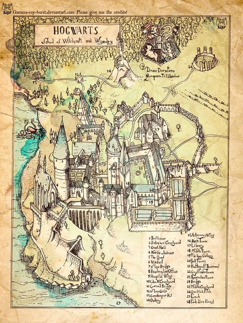

Hogwarts
Hogwarts School of English está localizada em uma região montanhosa e isolada, longe da agitação das grandes cidades. Situada em um cenário pitoresco, com florestas e vales, a escola mantém o charme de sua arquitetura medieval adaptada aos tempos modernos. A região, fictícia mas inspirada no interior da Inglaterra, poderia lembrar áreas como Cornualha ou as Cumbrian Hills, com suas paisagens naturais e tranquilidade, ideais para o estudo focado da língua inglesa. A escola é um imponente prédio de pedra com torres e corredores longos, onde os alunos se dedicam à literatura e ao domínio da língua. A biblioteca é uma das maiores da região, oferecendo um vasto acervo de textos literários e acadêmicos. O Salão Principal serve como espaço para refeições e eventos, com uma vista deslumbrante das montanhas ao redor. O campus também conta com jardins e áreas abertas para estudos ao ar livre. O transporte até Hogwarts se dá por meio de trem, a partir da estação de Hogsmeade, ou ônibus escolares, ligando a escola a vilas e cidades próximas. Em torno da escola, há pequenas vilas onde os alunos podem interagir com a cultura local e praticar o inglês cotidiano, além de cafés literários que fomentam discussões informais. Com um clima tipicamente britânico, com invernos frios e verões frescos, a escola oferece um ambiente tranquilo e propício à reflexão e ao estudo, tornando Hogwarts um lugar ideal para quem busca aprimorar suas habilidades na língua inglesa, em meio à história, cultura e literatura.
